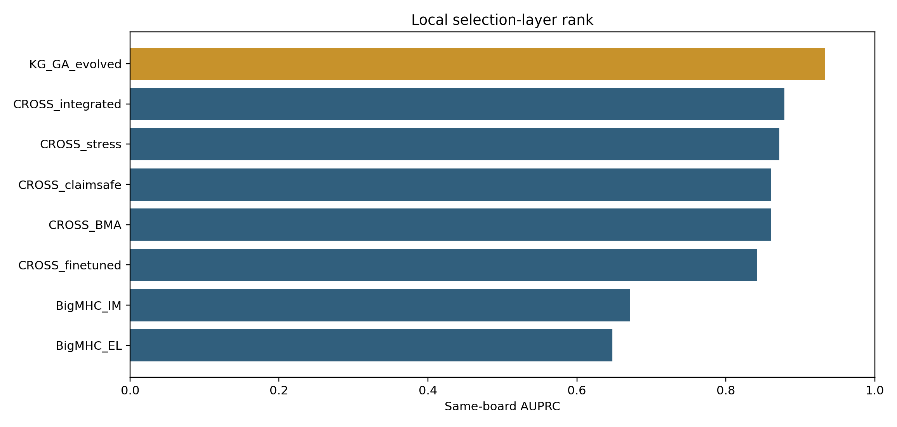
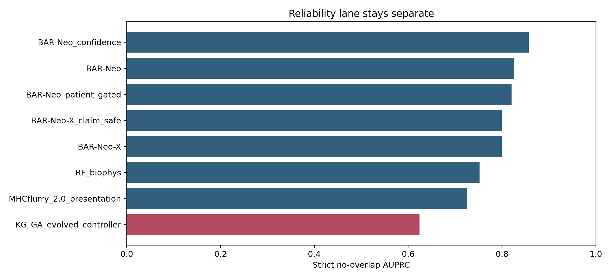
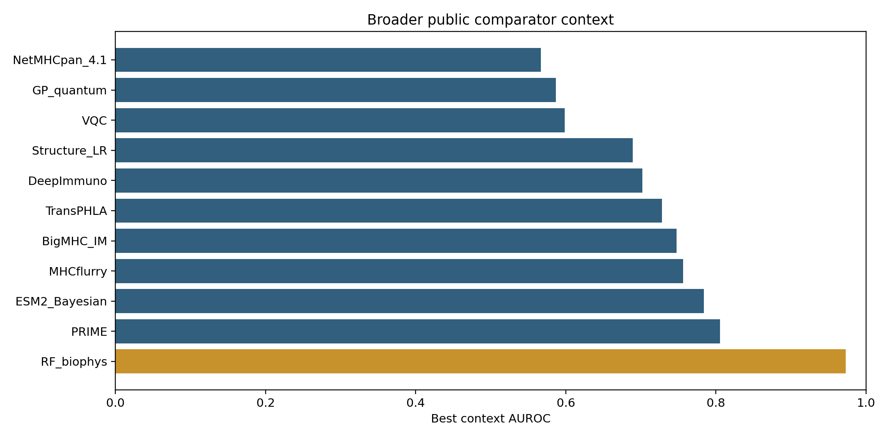

KG-GA vs local comparators.
This pack is the bridge between the technical comparison and the external conversation. It keeps same-board champion evidence, strict reliability boundaries, and latest literature watchlist separated so the pitch stays credible.
We are not selling a replacement mRNA platform. We are selling the selection layer that improves which candidates enter a fixed-slot individualized vaccine payload, with a frozen blinded validation path and clear claim boundary.

KG-GA vs local comparators.

BAR-Neo remains the strict lane winner.

Broader public comparator context.
| section | value | detail |
|---|---|---|
| Same-board champion | KG_GA_evolved | AUPRC 0.933 / AUROC 0.943 / top96 96/96 |
| Frozen validation-like | KG_GA_evolved | AUPRC 0.978 / AUROC 0.999 |
| Low/medium leakage | KG_GA_evolved | AUPRC 0.757 / top96 36/96 |
| Strict no-overlap winner | BAR-Neo_confidence | AUPRC 0.857 / AUROC 0.980 |
| Latest literature watchlist | NetMHCpan-4.2 | plus ImmugenX, PepFore/NeoaPred, NeoGuider, TrambaHLApan, NeoTImmuML |
| algorithm | all AUPRC | all AUROC | frozen validation AUPRC | low medium leakage AUPRC | v6 smoke AUPRC | paperability reward |
|---|---|---|---|---|---|---|
| KG_GA_evolved | 0.933 | 0.943 | 0.978 | 0.757 | 0.812 | 0.922 |
| CROSS_claimsafe | 0.861 | 0.864 | 0.846 | 0.617 | 0.788 | 0.750 |
| CROSS_integrated | 0.878 | 0.896 | 0.714 | 0.573 | 0.790 | 0.703 |
| CROSS_BMA | 0.861 | 0.860 | 0.660 | 0.636 | 0.767 | 0.613 |
| CROSS_stress | 0.872 | 0.873 | 0.651 | 0.601 | 0.777 | 0.616 |
| CROSS_finetuned | 0.841 | 0.863 | 0.606 | 0.669 | 0.681 | 0.570 |
| BigMHC_IM | 0.672 | 0.722 | 0.334 | 0.374 | 0.672 | 0.340 |
| BigMHC_EL | 0.648 | 0.719 | 0.308 | 0.306 | 0.866 | 0.321 |
| algorithm | neo strict AUPRC | neo strict AUROC |
|---|---|---|
| BAR-Neo_confidence | 0.857 | 0.980 |
| BAR-Neo | 0.825 | 0.979 |
| BAR-Neo_patient_gated | 0.820 | 0.978 |
| BAR-Neo-X | 0.800 | 0.966 |
| BAR-Neo-X_claim_safe | 0.800 | 0.966 |
| RF_biophys | 0.752 | 0.685 |
| MHCflurry_2.0_presentation | 0.726 | 0.621 |
| KG_GA_evolved_controller | 0.624 | 0.897 |
| method | mean context AUROC | best context AUROC | claim use |
|---|---|---|---|
| RF_biophys | 0.891 | 0.973 | context-only, AUROC-only in this repo; do not use as locked same-board AUPRC unless rescored |
| PRIME | 0.669 | 0.805 | context-only, AUROC-only in this repo; do not use as locked same-board AUPRC unless rescored |
| ESM2_Bayesian | 0.784 | 0.784 | context-only, AUROC-only in this repo; do not use as locked same-board AUPRC unless rescored |
| MHCflurry | 0.696 | 0.756 | context-only, AUROC-only in this repo; do not use as locked same-board AUPRC unless rescored |
| BigMHC_IM | 0.645 | 0.748 | context-only, AUROC-only in this repo; do not use as locked same-board AUPRC unless rescored |
| TransPHLA | 0.681 | 0.728 | context-only, AUROC-only in this repo; do not use as locked same-board AUPRC unless rescored |
| DeepImmuno | 0.702 | 0.702 | context-only, AUROC-only in this repo; do not use as locked same-board AUPRC unless rescored |
| Structure_LR | 0.689 | 0.689 | context-only, AUROC-only in this repo; do not use as locked same-board AUPRC unless rescored |
| VQC | 0.599 | 0.599 | context-only, AUROC-only in this repo; do not use as locked same-board AUPRC unless rescored |
| GP_quantum | 0.587 | 0.587 | context-only, AUROC-only in this repo; do not use as locked same-board AUPRC unless rescored |
| NetMHCpan_4.1 | 0.567 | 0.567 | context-only, AUROC-only in this repo; do not use as locked same-board AUPRC unless rescored |
NetMHCpan-4.2, ImmugenX, PepFore/NeoaPred, NeoGuider, TrambaHLApan, and NeoTImmuML are the newer literature methods to watch. They are useful context, but their metrics are not merged into the local leaderboard because the datasets and endpoints differ.
| item | share level | path |
|---|---|---|
| Non-confidential teaser | pre-NDA | /home/seungho/personal/THCA_data_analysis/project/results/cross_neo_moderna_bd_package_2026_05_11/MODERNA_NONCONFIDENTIAL_TEASER.md |
| Outreach email draft | pre-NDA | /home/seungho/personal/THCA_data_analysis/project/results/cross_neo_moderna_bd_package_2026_05_11/MODERNA_OUTREACH_EMAIL_AFTER_IP.md |
| Impact memo | pre-NDA | /home/seungho/personal/THCA_data_analysis/project/results/cross_neo_partner_pack_2026_05_11/MODERNA_IMPACT_MEMO.md |
| Board memo | pre-NDA | /home/seungho/personal/THCA_data_analysis/project/results/cross_neo_partner_pack_2026_05_11/MODERNA_BOARD_MEMO.md |
| Competitive positioning | pre-NDA | /home/seungho/personal/THCA_data_analysis/project/results/cross_neo_partner_pack_2026_05_11/MODERNA_COMPETITIVE_POSITIONING.md |
| Next-step checklist | pre-NDA | /home/seungho/personal/THCA_data_analysis/project/results/cross_neo_partner_pack_2026_05_11/MODERNA_NEXT_STEP_CHECKLIST.md |
| Why now | pre-NDA | /home/seungho/personal/THCA_data_analysis/project/results/cross_neo_partner_pack_2026_05_11/MODERNA_WHY_NOW.md |
| Why sponsor | pre-NDA | /home/seungho/personal/THCA_data_analysis/project/results/cross_neo_partner_pack_2026_05_11/MODERNA_WHY_SPONSOR.md |
| Why team | pre-NDA | /home/seungho/personal/THCA_data_analysis/project/results/cross_neo_partner_pack_2026_05_11/MODERNA_WHY_TEAM.md |
| One-slide executive | pre-NDA | /home/seungho/personal/THCA_data_analysis/project/results/cross_neo_partner_pack_2026_05_11/MODERNA_ONE_SLIDE_EXECUTIVE.md |
| Killer summary | pre-NDA | /home/seungho/personal/THCA_data_analysis/project/results/cross_neo_partner_pack_2026_05_11/MODERNA_KILLER_SUMMARY.md |
| Decision snapshot | pre-NDA | /home/seungho/personal/THCA_data_analysis/project/results/cross_neo_partner_pack_2026_05_11/MODERNA_DECISION_SNAPSHOT.md |
| Cover letter | pre-NDA | /home/seungho/personal/THCA_data_analysis/project/results/cross_neo_partner_pack_2026_05_11/MODERNA_COVER_LETTER.md |
| Partner invitation | pre-NDA | /home/seungho/personal/THCA_data_analysis/project/results/cross_neo_partner_pack_2026_05_11/MODERNA_PARTNER_INVITATION.md |
| Board ask | pre-NDA | /home/seungho/personal/THCA_data_analysis/project/results/cross_neo_partner_pack_2026_05_11/MODERNA_BOARD_ASK.md |
| Pilot proposal | NDA | /home/seungho/personal/THCA_data_analysis/project/results/cross_neo_partner_pack_2026_05_11/MODERNA_PILOT_PROPOSAL.md |
| Success metrics | NDA | /home/seungho/personal/THCA_data_analysis/project/results/cross_neo_partner_pack_2026_05_11/MODERNA_SUCCESS_METRICS.md |
| Milestones | NDA | /home/seungho/personal/THCA_data_analysis/project/results/cross_neo_partner_pack_2026_05_11/MODERNA_MILESTONES.md |
| Budget sketch | NDA | /home/seungho/personal/THCA_data_analysis/project/results/cross_neo_partner_pack_2026_05_11/MODERNA_BUDGET_SKETCH.md |
| Mutual action plan | NDA | /home/seungho/personal/THCA_data_analysis/project/results/cross_neo_partner_pack_2026_05_11/MODERNA_MUTUAL_ACTION_PLAN.md |
| company | route | url | pre nda action | confidentiality note |
|---|---|---|---|---|
| Merck | Business development and licensing (BD&L) | https://www.merck.com/research/business-development-and-licensing/ | Use non-confidential teaser only; request CDA/NDA and blinded validation discussion. | Do not send source code, feature list, candidate tables, or scoring weights before CDA/NDA. |
| Merck | Corporate contact fallback | https://www.merck.com/contact-us/ | Ask for the correct BD&L contact for individualized neoantigen vaccine selection technology. | General contact route; keep all technical details non-confidential. |
| Moderna | Official contact page | https://www.modernatx.com/en-US/contact-moderna | Use only to request routing or a warm BD contact; do not disclose internals through general inboxes. | No public BD-specific email was verified here; treat as routing only, not a confidential submission portal. |
| Moderna/Merck | Warm intro / conference BD route | NA | Send one-paragraph teaser and ask for CDA/NDA-enabled technical diligence. | Do not attach NDA-stage validation protocol unless CDA/NDA is in place. |
| claim | line | blocked |
|---|---|---|
| Allowed pre-NDA | Retrospective prioritization engine and validation ask | Efficacy or prospective proof |
| Allowed under NDA | Blinded top-34 validation on sponsor data | Unblinded model internals before lock |
| Allowed in BD | Selection layer for individualized mRNA vaccine payloads | Replacing Moderna's platform |
| Not allowed | Universal SOTA claim over every public method | Different endpoints and datasets |
Say: We have a frozen selection layer that improves candidate prioritization under a fixed-slot individualized mRNA vaccine payload.
Say: We can run a blinded validation on sponsor candidates and return top-34 ranking plus uncertainty and assay-control annotations.
Do not say: Prospective efficacy, universal SOTA, or replacement of the sponsor platform.
| item | share level | path |
|---|---|---|
| Call script | pre-NDA | /home/seungho/personal/THCA_data_analysis/project/results/cross_neo_partner_pack_2026_05_11/MODERNA_CALL_SCRIPT.md |
| First meeting agenda | pre-NDA | /home/seungho/personal/THCA_data_analysis/project/results/cross_neo_partner_pack_2026_05_11/MODERNA_FIRST_MEETING_AGENDA.md |
| Due diligence questions | pre-NDA | /home/seungho/personal/THCA_data_analysis/project/results/cross_neo_partner_pack_2026_05_11/MODERNA_DD_QUESTIONS.md |
| Follow-up email | pre-NDA | /home/seungho/personal/THCA_data_analysis/project/results/cross_neo_partner_pack_2026_05_11/MODERNA_FOLLOWUP_EMAIL.md |